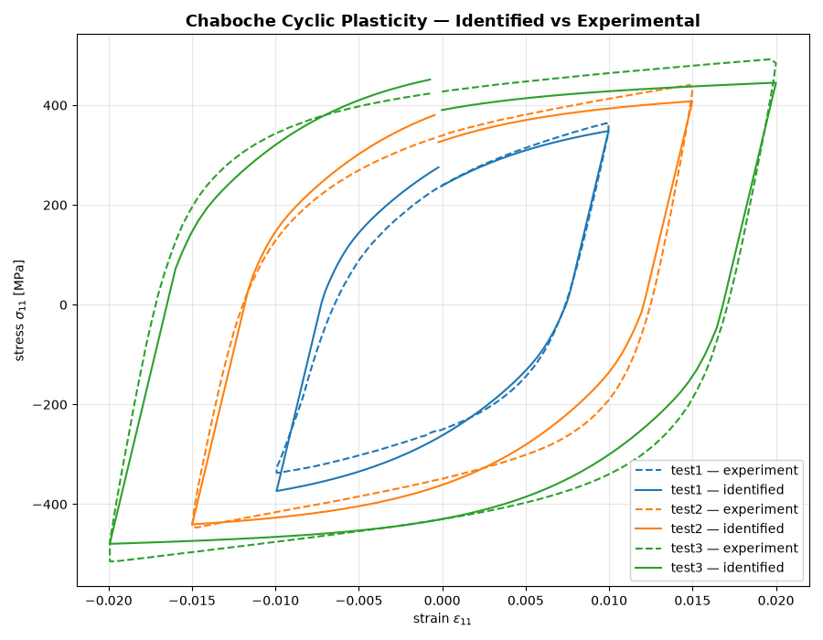

Note
Go to the end to download the full example code.
Chaboche Cyclic Plasticity Identification
Identify 7 elasto-plastic Chaboche parameters from 3 cyclic uniaxial tests.
Material model: EPCHA UMAT — linear elasticity + Voce isotropic hardening
+ two non-linear kinematic backstresses.
Symbol |
Parameter |
Bounds |
|---|---|---|
|
initial yield |
50 – 300 MPa |
|
Voce isotropic |
100 – 10000 MPa, 0.01 – 10 |
|
1st backstress |
1e3 – 1e5 MPa, 10 – 1000 |
|
2nd backstress |
1e4 – 1e6 MPa, 10 – 10000 |
Fixed: \(E = 140000\) MPa, \(\nu = 0.3\), \(\alpha = 10^{-6}\).
The three tests are cyclic strain-controlled tensile experiments at increasing
amplitudes (~1%, ~1.5%, ~2%). Each one needs a pre-cycling stage so the
numerical model arrives at the comparison window with realistic accumulated
backstress, then an initial-state alignment so it starts at the same
residual strain as the experiment, then a replay of the experimental
loading path. This is encoded in three blocks of the path_id_N.json file:
Block 1 (mode 1, linear) — virtual pre-cycle (±1%, ±1.5%, ±2%)
Block 2 (mode 1, linear) — set initial residual strain (first row of exp)
Block 3 (mode 3, tabular) — replay of the experimental table, read from the
path_id_N_tab1.csvfile the JSON references
Blocks 1 and 2 use 100 increments per step, with Dn_mini = 0.1 so the
solver can still sub-increment for stiff trial parameters.
The path_id_N.json / path_id_N_tab1.csv pairs are provided in data/
because they are tricky to construct manually (they were converted from the legacy
path_id_N.txt + tab_file_N.txt pairs with scripts/legacy_to_json.py).
A later step will
replace this scaffolding by Python helpers that build the steps from the experimental
data.
Forward model: simcoon.solver() (UMAT material-point integrator).
Optimization: simcoon.identification() with method="least_squares"
(bounded trust-region reflective least squares, parameters scaled
logarithmically, since most of them span two to three decades), on the
residuals of simcoon.calc_residuals().
Cost: nmse_per_response — the three tests share one stress column, so the cost is
the summed squared error of the three tests divided by their summed squared stresses
(the tests are pooled, not normalised one by one: a test with larger stresses weighs more).

============================================================
CHABOCHE CYCLIC PLASTICITY IDENTIFICATION
7 params from 3 cyclic tests, NMSE-per-response cost
============================================================
test1: path_id_1.json vs exp_file_1.txt (201 pts)
test2: path_id_2.json vs exp_file_15.txt (201 pts)
test3: path_id_3.json vs exp_file_2.txt (200 pts)
============================================================
IDENTIFIED PARAMETERS
============================================================
sigmaY = 74.182 (bounds (50, 300))
Q = 288.630 (bounds (100, 10000))
b = 9.997 (bounds (0.01, 10.0))
C_1 = 28390.417 (bounds (1000, 100000))
D_1 = 168.312 (bounds (10, 1000))
C_2 = 78592.140 (bounds (10000, 1000000.0))
D_2 = 2175.573 (bounds (10, 10000))
Final cost (NMSE/response) = 8.0066e-03 (259 evaluations)
import os
import numpy as np
import matplotlib.pyplot as plt
import simcoon as sim
from simcoon.parameter import Parameter
from simcoon.identify import identification, calc_residuals
# ---------------------------------------------------------------------------
# Test catalogue — file naming mirrors the legacy ``03 - Identification``
# layout (numbering is intentional: 1, 1.5, 2 strain amplitudes).
# ---------------------------------------------------------------------------
TESTS = [
# name path file (its mode-3 table embedded) exp file
("test1", "path_id_1.json", "exp_file_1.txt"),
("test2", "path_id_2.json", "exp_file_15.txt"),
("test3", "path_id_3.json", "exp_file_2.txt"),
]
UMAT_NAME = "EPCHA"
NSTATEV = 33
SOLVER_TYPE = 0
CORATE_TYPE = 2
# Fixed (not identified)
E_FIXED = 140000.0
NU_FIXED = 0.3
ALPHA_FIXED = 1.0e-6
# Identified — order matches the EPCHA props vector after E, nu, alpha.
PARAMS = [
Parameter(1, bounds=(50, 300), key="@1p"), # sigmaY
Parameter(2, bounds=(100, 10000), key="@2p"), # Q
Parameter(3, bounds=(0.01, 10.0), key="@3p"), # b
Parameter(4, bounds=(1000, 100000), key="@4p"), # C_1
Parameter(5, bounds=(10, 1000), key="@5p"), # D_1
Parameter(6, bounds=(10000, 1.0e6), key="@6p"), # C_2
Parameter(7, bounds=(10, 10000), key="@7p"), # D_2
]
PARAM_NAMES = ["sigmaY", "Q", "b", "C_1", "D_1", "C_2", "D_2"]
# The Jacobian of the least squares needs one simulation per parameter: they are
# independent and ``sim.solver.solve`` releases the GIL, so they run in threads
# (the result does not depend on the number of threads).
N_THREADS = 4
def build_props(x):
"""Assemble the EPCHA props vector from the optimizer's parameter array."""
return np.array([E_FIXED, NU_FIXED, ALPHA_FIXED, *x])
def run_one_test(props, programme):
"""Run one case and return the predicted σ11 trajectory.
``programme`` is the ``(blocks, T_init)`` pair ``load_path_json`` read once in main():
an identification evaluates this thousands of times, and none of them touches the
disk or re-parses the path.
Only the **last** block is returned. The first two blocks are the virtual
pre-cycle and the initial-state alignment; the experiment corresponds to the
third one, the tabular replay of the experimental strain history. The experimental
file covers exactly that window (201 points against 501 increments for the whole
history), so only that block can be compared with it.
"""
blocks, T_init = programme
res = sim.solver.solve(
blocks, UMAT_NAME, props, NSTATEV, T_init=T_init,
solver_type=SOLVER_TYPE, corate=CORATE_TYPE,
)
block = np.asarray(res["Block"])
return np.asarray(res["Stress"][0])[block == block.max()]
def residuals(x, exp_stresses, programmes):
"""Residuals of the three tests; their sum of squares is the
``nmse_per_response`` cost of :func:`simcoon.calc_cost`."""
props = build_props(x)
y_num = []
for programme in programmes:
try:
sigma11 = run_one_test(props, programme)
except Exception:
# NaN residuals: the optimizer rejects the step and shrinks it
return np.full(sum(len(e) for e in exp_stresses), np.nan)
y_num.append(sigma11.reshape(-1, 1))
return calc_residuals(exp_stresses, y_num, metric="nmse_per_response")
def main():
# sim.solver reads/writes relative to cwd
try:
script_dir = os.path.dirname(os.path.abspath(__file__))
except NameError:
script_dir = os.getcwd()
os.chdir(script_dir)
path_data = "data"
path_exp = "exp_data"
# Experimental σ11 — exp file columns: incr, time, strain, stress
exp_stresses = []
for _, _, expfile in TESTS:
exp = np.loadtxt(os.path.join(path_exp, expfile))
exp_stresses.append(exp[:, 3].reshape(-1, 1))
print("=" * 60)
print(" CHABOCHE CYCLIC PLASTICITY IDENTIFICATION")
print(" 7 params from 3 cyclic tests, NMSE-per-response cost")
print("=" * 60)
for i, (name, pathfile, expfile) in enumerate(TESTS):
print(f" {name}: {pathfile} vs {expfile} ({len(exp_stresses[i])} pts)")
# The loading programmes, parsed once for the whole identification
programmes = [sim.solver.load_path_json(os.path.join(path_data, pathfile))[:2]
for _, pathfile, _ in TESTS]
# One start from the middle of the (log-scaled) bounds; raise n_starts to
# explore the valley further. diff_step: finite-difference step above the
# solver tolerance.
result = identification(
residuals, PARAMS, method="least_squares",
args=(exp_stresses, programmes),
n_starts=1, diff_step=1e-6, n_threads=N_THREADS,
)
print()
print("=" * 60)
print(" IDENTIFIED PARAMETERS")
print("=" * 60)
for n, p in zip(PARAM_NAMES, PARAMS):
print(f" {n:8s} = {p.value:>12.3f} (bounds {p.bounds})")
print(f"\n Final cost (NMSE/response) = {np.sum(result.fun ** 2):.4e}"
f" ({result.nfev} evaluations)")
# All three tests on one plot — dashed = experiment, solid = identified
fig, ax = plt.subplots(figsize=(9, 7))
final_props = build_props(np.array([p.value for p in PARAMS]))
colors = ["tab:blue", "tab:orange", "tab:green"]
for (name, _pf, expfile), programme, color in zip(TESTS, programmes, colors):
exp = np.loadtxt(os.path.join(path_exp, expfile))
sigma_num = run_one_test(final_props, programme)
ax.plot(exp[:, 2], exp[:, 3], color=color, linestyle="--",
linewidth=1.5, label=f"{name} — experiment")
ax.plot(exp[:, 2], sigma_num, color=color, linestyle="-",
linewidth=1.5, label=f"{name} — identified")
ax.set_xlabel(r"strain $\varepsilon_{11}$")
ax.set_ylabel(r"stress $\sigma_{11}$ [MPa]")
ax.set_title("Chaboche Cyclic Plasticity — Identified vs Experimental",
fontsize=13, fontweight="bold")
ax.grid(True, alpha=0.3)
ax.legend(loc="best", framealpha=0.9)
plt.tight_layout()
plt.show()
if __name__ == "__main__":
main()
Total running time of the script: (0 minutes 1.846 seconds)